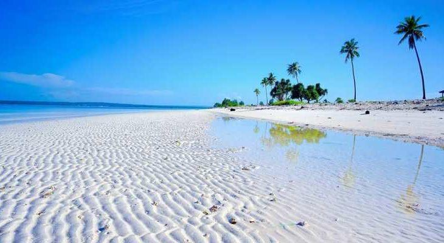

Rekomendasi Wisata
Karna merupakan sebuah kepulauan maka pulau Buton memiliki banyak wisata yang bisa dikunjungi dan dijadikan list perjalanan wisata. Dengan status sebagai kepulau, maka pulau buton memiliki beberapa pantai sebagai objek wisata. Contohnya sebagai berikut:
Benteng Keraton

Benteng Kesultanan Buton merupakan salah satu objek wisata bersejarah di Bau-bau, Sulawesi Tenggara. Benteng ini merupakan bekas ibu kota Kesultanan Buton memiliki bentuk arsitek yang cukup unik, terbuat dari batu kapur/gunung. Benteng yang berbentuk lingkaran ini dengan panjang keliling 2.740 meter. Benteng Keraton Buton mendapat penghargaan dari Museum Rekor Indonesia (MURI) dan Guiness Book Record yang dikeluarkan bulan September 2006 sebagai benteng terluas di dunia dengan luas sekitar 23,375 hektare.
Benteng ini memiliki 12 pintu gerbang yang disebut Lawa dan 16 emplasemen meriam yang mereka sebut Baluara. Karena letaknya pada puncak bukit yang cukup tinggi dengan lereng yang cukup terjal memungkinkan tempat ini sebagai tempat pertahanan terbaik di zamannya. Dari tepi benteng yang sampai saat ini masih berdiri kokoh anda dapat menikmati pemandangan kota Bau-Bau dan hilir mudik kapal di selat Buton dengan jelas dari ketinggian,suatu pemandangan yang cukup menakjukkan. Selain itu, di dalam kawasan benteng dapat dijumpai berbagai peninggalan sejarah Kesultanan Buton.
Benteng Kesultanan Buton dibangun pada abad ke-16 oleh Sultan Buton III bernama La Sangaji yang bergelar Sultan Kaimuddin (1591-1596). Pada awalnya, benteng tersebut hanya dibangun dalam bentuk tumpukan batu yang disusun mengelilingi komplek istana dengan tujuan untuk mambuat pagar pembatas antara komplek istana dengan perkampungan masyarakat sekaligus sebagai benteng pertahanan. Pada masa pemerintahan Sultan Buton IV yang bernama La Elangi atau Sultan Dayanu Ikhsanuddin, benteng berupa tumpukan batu tersebut dijadikan bangunan permanen.
Pada masa kejayaan pemerintahan Kesultanan Buton, keberadan Benteng Kesultanan Buton memberi pengaruh besar terhadap eksistensi Kerajaan. Dalam kurun waktu lebih dari empat abad, Kesultanan Buton bisa bertahan dan terhindar dari ancaman musuh. Dari tepi benteng yang sampai saat ini masih berdiri kokoh anda dapat menikmati pemandangan kota Bau-Bau dan hilir mudik kapal di selat Buton dengan jelas dari ketinggian.
Goa Maobu

Goa Maobu adalah sebuah goa yang terletak di Pulau Buton, Sulawesi Tenggara, Indonesia. Goa ini merupakan salah satu tujuan wisata yang menarik di daerah tersebut. Dengan formasi batu yang menakjubkan dan keunikan alaminya, Goa Maobu menawarkan pengalaman yang tak terlupakan bagi para pengunjungnya.
Goa Maobu memiliki lorong-lorong yang terbentuk dari batu kapur yang indah dan kompleks. Pengunjung dapat menjelajahi lorong-lorong ini yang dipenuhi dengan stalaktit dan stalagmit yang menakjubkan. Keindahan alami goa ini terlihat dari formasi batu yang unik, terbentuk selama ribuan tahun oleh proses alam yang lambat.
Selain itu, goa ini juga memiliki beberapa ruangan dalam yang luas, menciptakan suasana yang misterius dan menarik.
Cahaya yang masuk melalui celah-celah batu memberikan efek yang dramatis pada lingkungan goa, menciptakan pemandangan yang luar biasa.
Selama menjelajahi Goa Maobu, pengunjung juga dapat menemukan berbagai spesies kehidupan gua, seperti kelelawar dan serangga gua. Kehadiran mereka menambah keaslian dan kehidupan di dalam goa ini.
Pantai Katembe
Lokasi wisata Pantai Katembe, berada di Desa Madongka, Kecamatan Lakudo, Kabupaten Buton Tengah. Hamparan pasir putih dan samudera biru, akan selalu diingat mereka yang pernah berkunjung ke tempat ini. Membentang dari jalan masuk menuju pantai, pasir putih di wilayah ini cukup luas. Malah, hamparannya kerap dijadikan sarana olahraga bola voli pantai atau sepakbola mini. Namun, nama pantai Katembe ternyata bukan dikenal karena keindahan pasirnya. Katembe dalam bahasa daerah setempat, berarti air tawar. Nah, sekitar 30 meter dari bibir pantai, ternyata ada sebuah sumur air tawar. Cukup aneh, sebab hanya satu-satunya sumur yang ada di sekitar pantai. Sumur ini, sudah ada sejak puluhan tahun lamanya di lokasi wisata pantai Katembe. Tak ada cerita yang jelas, siapa yang menggali dan awalnya ditemukan.
Pulau ular

Pulau Ular, adalah salah satu lokasi wisata pantai di Kabupaten Buton Selatan. Mendengar namanya, kita akan langsung ragu mengunjungi tempat ini.
Tetapi, jangan dulu berpikiran lain. Pesona pulau ini ternyata bisa mengalahkan namanya saat kita sudah menginjakkan kaki disana.
Ada kisah zaman dahulu, kenapa warga disana menyebut lokasi ini dengan nama pulau Ular. Padahal, nama asli tempat ini adalah Liwuntokidi.
Dari Kota Makassar, wisata ke pulau ular bisa ditempuh dengan waktu 45 menit menggunakan pesawat udara dari Bandara Sultan Hasanuddin Makassar menuju Bandara Betoambari Baubau. Sementara jika dari Baubau, jika menggunakan guide lokal, kita diantar menuju Pelabuhan Topa. Dari pelabuhan Topa menuju Pulau Ular, memakan waktu 35-40 menit ketika cuaca cerah. Disarankan, bagi yang tak menyukai ombak, setelah matahari terbit langsung melakukan perjalanan ke pulau ini dari Topa. Pengunjung bisa menyewa perahu lokal dengan harga Rp50 ribu per orang. Tarif wisata ini sudah termasuk jasa menjemput saat wisatawan akan kembali ke Kota Baubau.
Nah, sebelum kapal mendarat di tepi pantai dan siap memulai wisata, tiuris bakal terpesona dengan pasir putihnya. Dari kejauhan, pulau ular seperti memanggil untuk menginjakkan kaki di atas hamparan pasir putih.
Air Terjun Kandawu-Ndawuna

Berbicara keindahan alam di Kabupaten Buton seakan tak ada habisnya. Selain memiliki wisata bahari yang memukau, daerah ini juga memiliki wisata pegunungan yang indah nan eksotis. Adalah Air Terjun Kandawu-ndawuna yang bisa anda jadikan sebagai salah satu destinasi liburan.
Air Terjun Kandawu-ndawuna dengan ketinggian 30 meter ini, bisa dibilang sebagai salah satu surga tersembunyi di Buton. Wisata ini belum dijamah banyak orang.
Ketika berada di sini, anda akan terpukau dengan keindahan air terjun serta panorama yang ada di sekitarnya. Dengan aliran air yang jernih, bisa juga digunakan untuk mandi atau sekedar bermain air. Selain menikmati pemandangan alam yang cukup mempesona, anda juga bisa merasakan udara yang masih sejuk. Jika anda tertarik berwisata ke sini, jangan lupa membawa kamera untuk berfoto-foto. Sebab, pemandangan yang indah di Air Terjun Kandawu-nduwana sayang, jika dilewatkan tanpa diabadikan.
Itulah beberapa rekomendasi wisata di kepulauan buton yang bisa anda tambahkan kedalam list liburan anda nantinya.